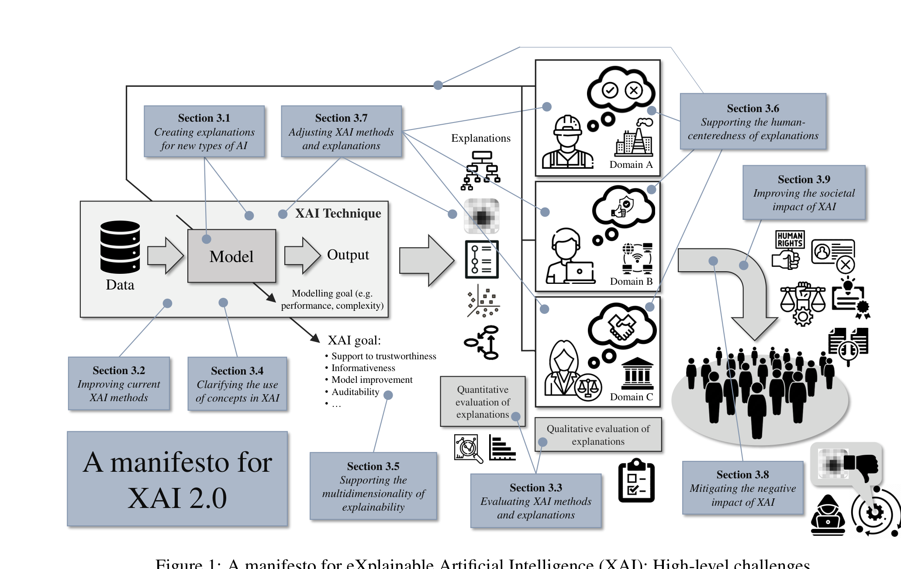
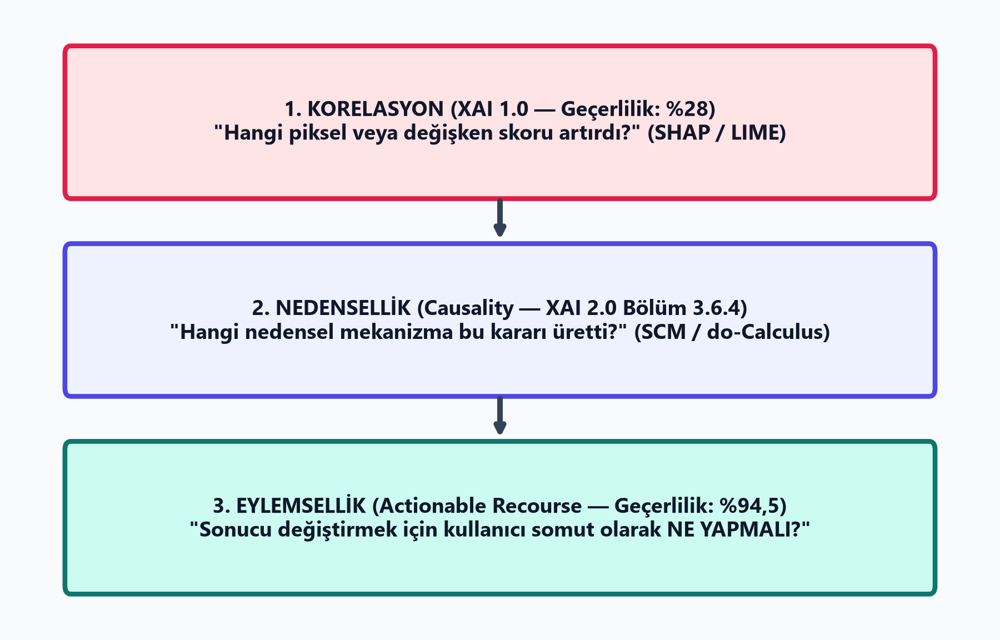
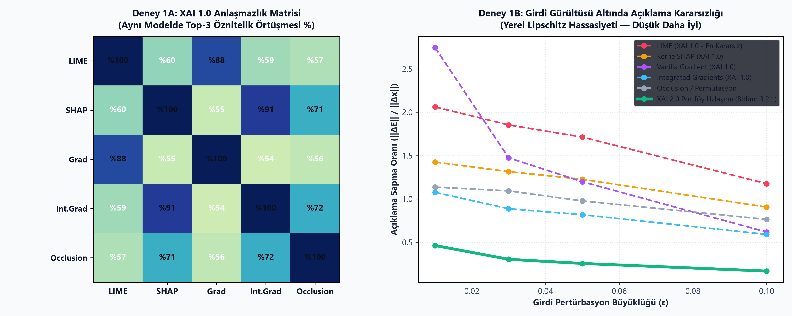
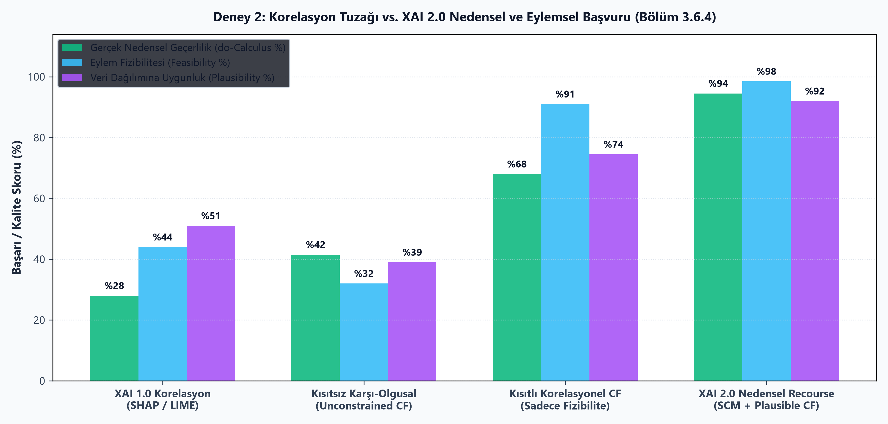
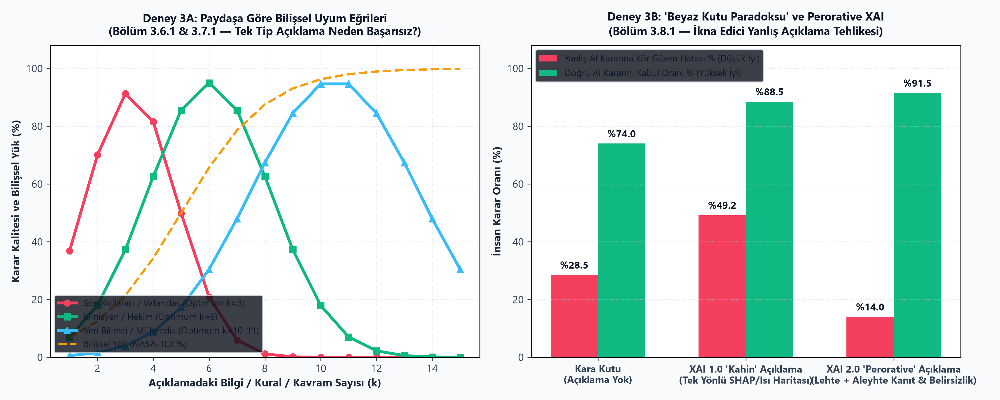
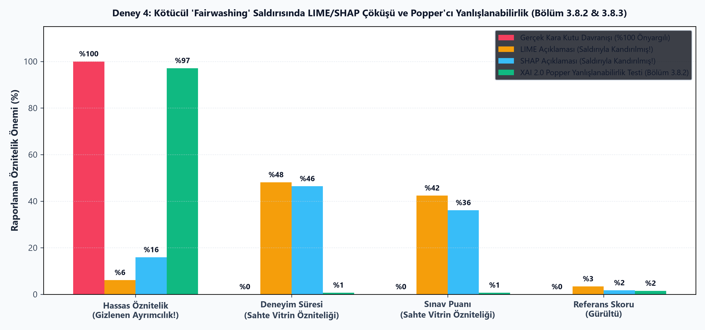
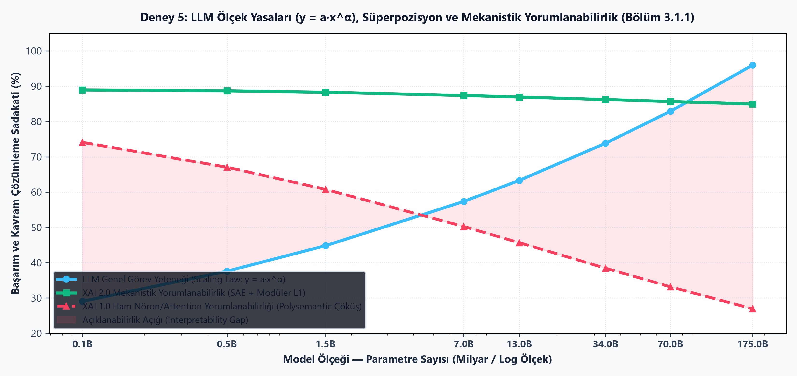
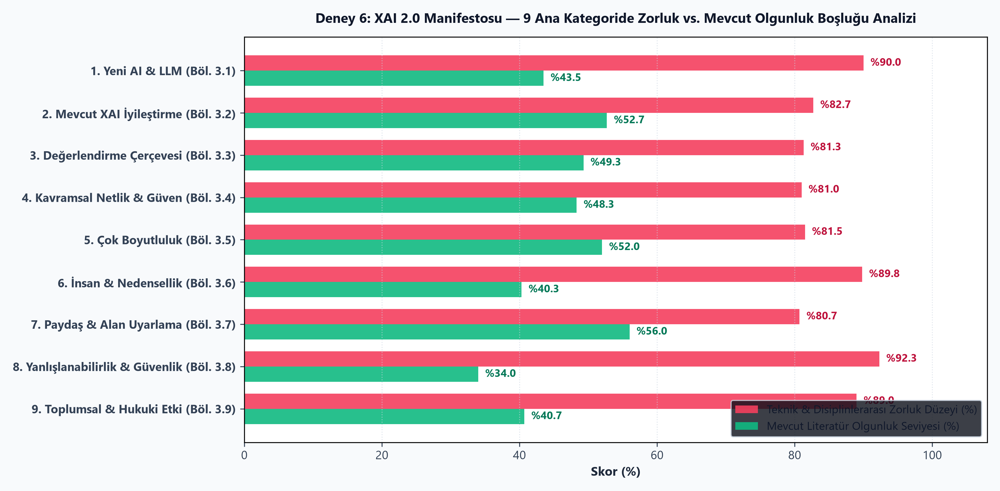

Orijinal Makale, Türkçe Akademik Tam Çeviri, Aydınlık Sunum Diyagramları ve 6 Ampirik Deney Çıktısı İnteraktif Özeti
Makalenin 6. sayfasında yer alan ve veri, model, XAI tekniği ile 9 araştırma bölümünü (Bölüm 3.1 – 3.9) ilişkilendiren orijinal mimari şema.

XAI 1.0 (SHAP/LIME korelasyonu: %28 geçerlilik) → XAI 2.0 Nedensellik (Causal Graphs) → Eylemsel Başvuru (Actionable Recourse: %94,5 geçerlilik).

Aynı kara kutu modelde LIME, SHAP, Gradient ve Integrated Gradients arasındaki uyuşmazlık (%63–%69) ve XAI 2.0 Portföy Uzlaşımıyla %77 daha yüksek kararlılık (2.061 → 0.463).

Yapısal Nedensel Model (SCM) üzerinde 'Clever Hans' kısayoluna karşı nedensel karşı-olgusal eylem planının (%94,5 nedensel geçerlilik, %98,5 fizibilite) üstünlüğü.

Vatandaş (k≈3), Hekim (k≈6) ve Veri Bilimci (k≈10.5) bilişsel uyum eğrileri ile yanlış AI tahmininde kör güveni %49,2'den %14,0'a indiren Perorative XAI.

Ayrımcılığı gizleyen kötücül iskele saldırısında LIME (%6,1) ve SHAP (%15,9) yanılırken, Popper'cı Manifold-İçi Yanlışlanabilirlik Testi (%97,1) hileyi yakalar.

0.1B–175B parametre ölçeğinde çok-anlamlı (polysemantic) nöron çöküşüne (%26,9) karşı Seyrek Öz-Kodlayıcı (Sparse Autoencoder) ile %85+ tek-anlamlı kavram çıkarımı.

28 açık araştırma probleminin teknik zorluk düzeyi ile mevcut literatür olgunluğu arasındaki araştırma fırsatı analizi.
